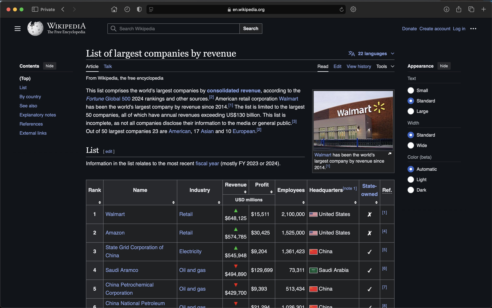
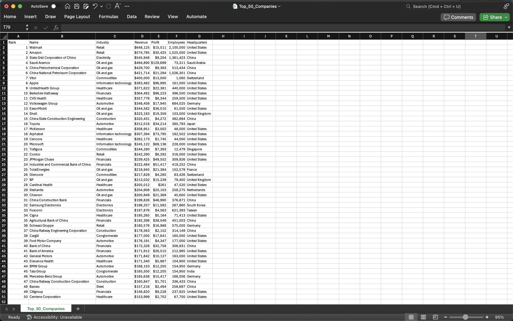

Data Scraping -
Wikipedia Page
Wiki Page: Press Here
GitHub File: Press Here
Overview:
This project demonstrates how to scrape data from a Wikipedia page listing the world's largest companies by revenue using Python's BeautifulSoup and requests libraries. The extracted data is cleaned, structured, and saved into a CSV file for further analysis, showcasing web scraping techniques that are vital in extracting valuable data from the web.
Key Skills Used:
• Web Scraping: Fetching and parsing HTML content using BeautifulSoup
• Data Cleaning: Extracting and formatting table data
• Pandas: Storing and transforming scraped data into a structured format (DataFrame)
• File Handling: Saving the resulting data into a CSV file for future use
Code Description:
The code fetches the Wikipedia page, identifies the first table on the page, and extracts its content. It processes the table's rows, stores the data in a Pandas DataFrame, and then saves the DataFrame to a CSV file containing the top 50 companies by revenue.
Why This Project is Worth Doing:
• Web scraping is an essential skill for data analysts looking to gather unstructured data from the web.
• This project provides hands-on experience with HTML parsing and data extraction techniques.
• Scraped data can be transformed and analysed for insights, making it a valuable for creating dashboards and reports.
Step-by-Step Guide for Web Scraping:
- Fetch Wikipedia Page: Use the requests library to retrieve the HTML content of the page.
- Extract Table: Parse the page with BeautifulSoup to locate the largest companies by revenue table.
- Clean Data: Extract relevant columns (company name, revenue, profit, etc.), remove any unnecessary notes, and store them in a DataFrame.
- Save to CSV: Store the structured data in a CSV file for future analysis or reporting.
Initial Webpage:

Extracted Data:

CONCLUDING REMARKS
This project was instrumental in developing my expertise with web scraping, especially in pulling structured information from unstructured sources like Wikipedia. By working with Python's BeautifulSoup and Pandas, I enhanced my ability to parse HTML, clean data, and export it into formats such as CSV. This project sharpened my understanding of automating data retrieval—an essential skill in modern data analysis. Moreover, it provided practical experience in turning raw web data into structured datasets, which is critical for further analysis and reporting. This knowledge is particularly relevant for real-world applications where gathering and analysing web data is necessary for data-driven insights.